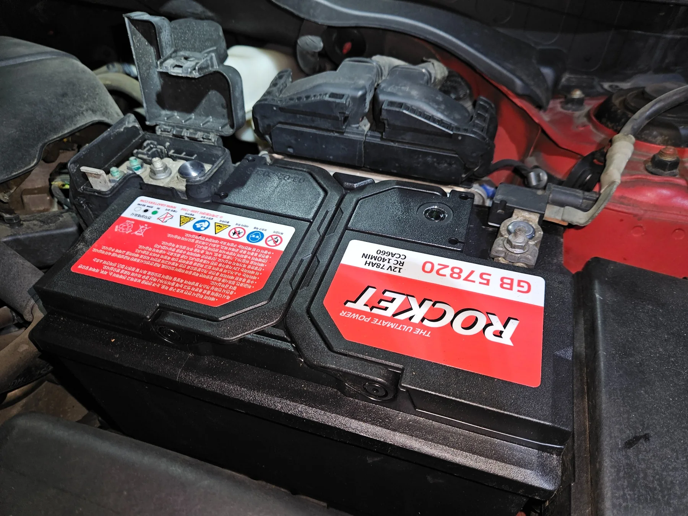
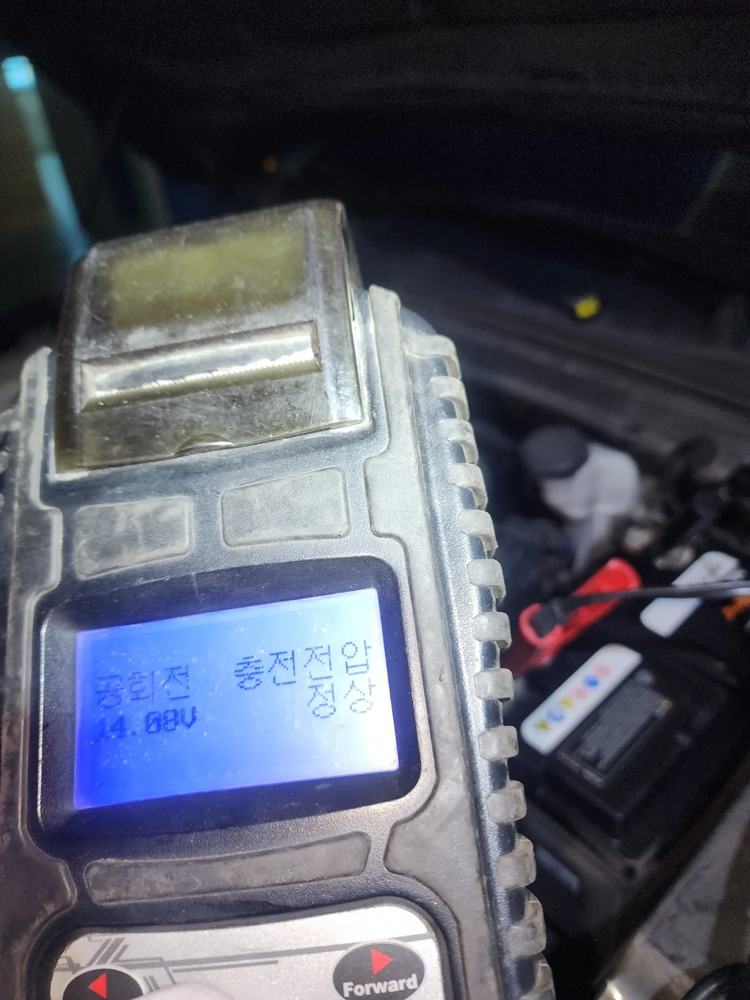
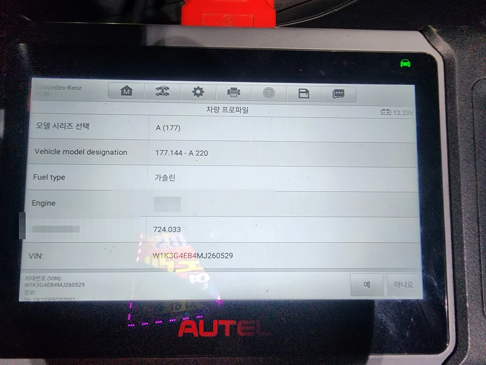
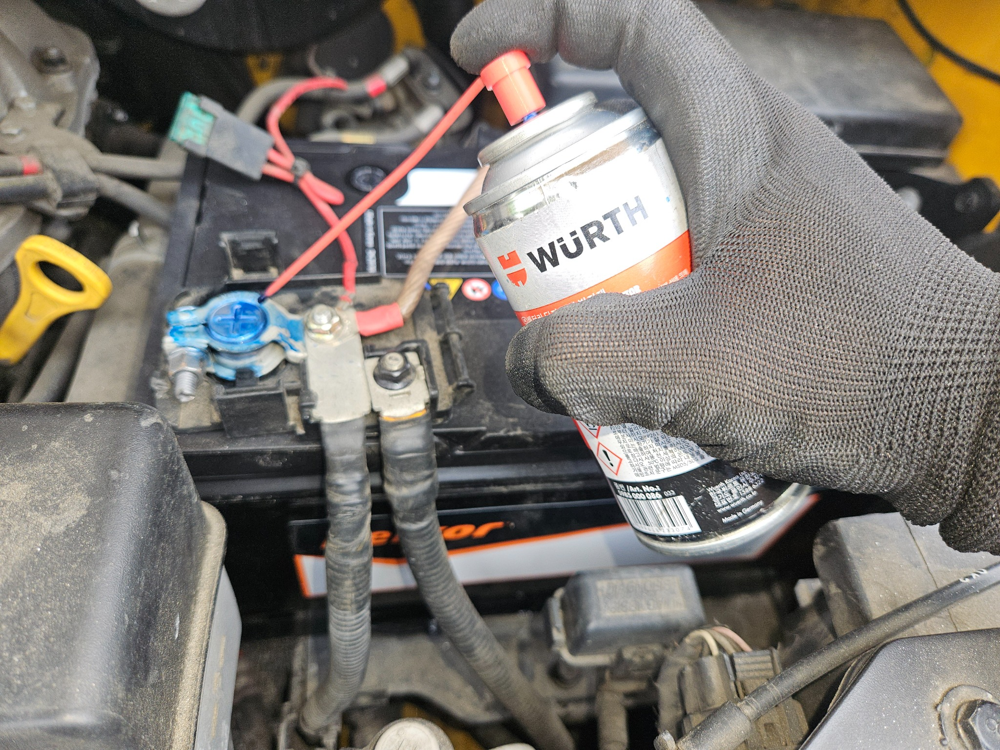
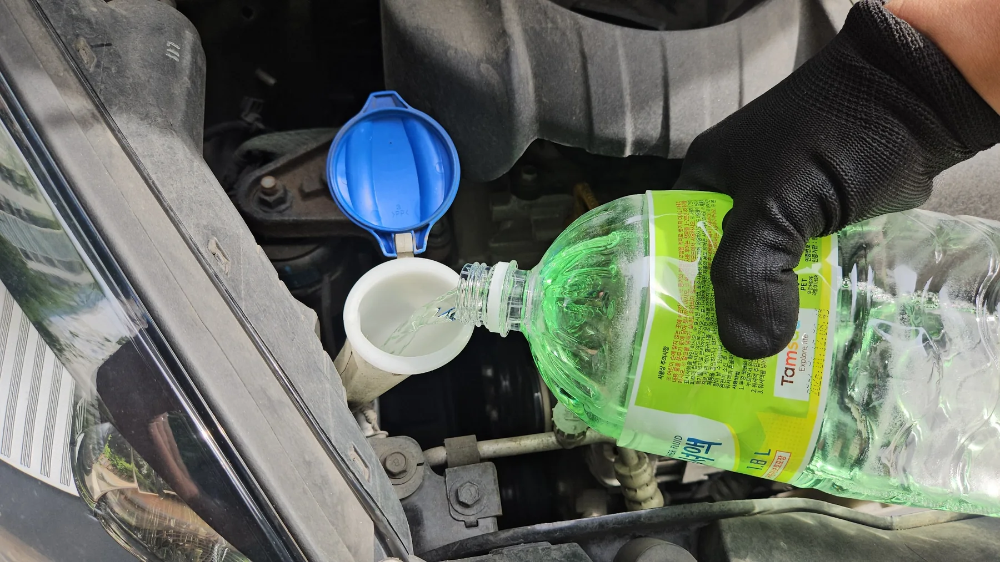
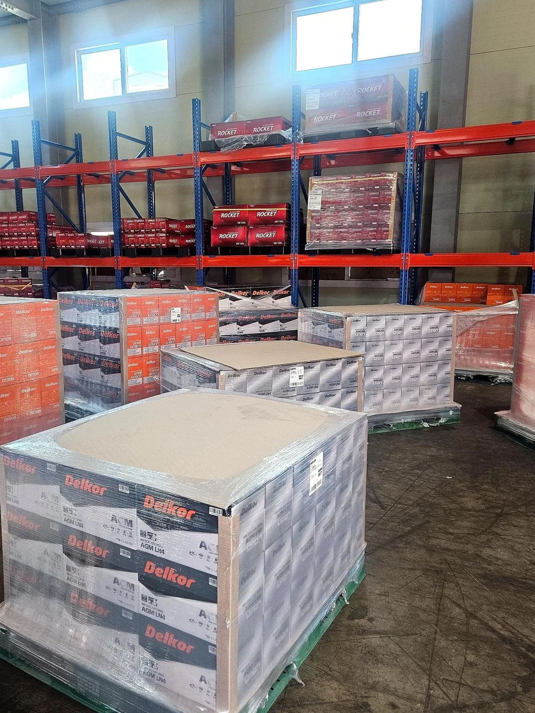

SERVICE 01
신품 배터리 교체
차종과 사용 환경에 맞는 규격을 확인해 장착합니다.
배터리만 바꾸고 끝내지 않습니다. 기존 배터리 상태와 차량 충전전압을 확인한 뒤 필요한 작업을 안내합니다.
시동 불량의 원인이 항상 배터리만은 아닙니다. 기존 배터리 상태와 교체 후 충전전압을 함께 확인해야 불필요한 재방문과 재방전을 줄일 수 있습니다.

현장에서 측정한 결과를 바탕으로 현재 상태를 설명하고, 필요한 작업만 안내합니다.
홈페이지용 연출 이미지가 아니라 배터리콜24가 직접 작업한 현장 사진을 사용했습니다.

차종과 사용 환경에 맞는 규격을 확인해 장착합니다.

수입차와 일부 차량의 배터리 교환등록을 지원합니다.

단자 상태를 확인하고 필요한 경우 보호 작업을 진행합니다.

배터리 교체 작업 시 차량 상태를 보며 함께 챙깁니다.
차량과 현장 상황에 따라 달라질 수 있지만, 기본적으로 진단부터 최종 확인까지 같은 원칙으로 진행합니다.
차종, 연식, 현재 위치와 기존 배터리 규격을 확인하고 출동 가능 여부를 안내합니다.
교체 전에 기존 배터리와 시동 상태를 측정해 단순 방전인지 성능 저하인지 확인합니다.
적합한 규격으로 교체하고 필요한 차량은 AUTEL 진단기로 배터리 교환등록을 진행합니다.
시동 후 발전기 충전전압과 단자 체결 상태를 확인하고 작업 결과를 설명합니다.
차량 정보와 기존 배터리 규격을 확인한 뒤 출동 전 재고와 작업 가능 여부를 안내합니다.

승용차, SUV, 수입차, 전기차 12V 보조 배터리, 화물차와 대형차까지 다양한 현장 경험을 바탕으로 상담합니다.
상담 전에 가장 많이 물어보시는 내용을 정리했습니다.
아닙니다. 실내등이나 블랙박스 등으로 일시 방전된 경우에는 재사용이 가능할 수 있습니다. 다만 노후화되었거나 성능이 크게 떨어진 배터리는 충전 후에도 다시 방전될 수 있어 현장 측정 결과를 보고 안내합니다.
BMW, 벤츠, 아우디, 폭스바겐, 볼보, 미니 등 여러 수입차 작업 경험이 있습니다. 차량에 따라 배터리 교환등록 또는 진단기 작업이 필요하므로 차종과 연식을 먼저 알려주세요.
배터리콜24는 24시간 연중무휴 상담을 운영합니다. 실제 도착 시간은 현재 작업 위치, 교통 상황, 재고에 따라 안내드립니다.
차종, 연식, 현재 위치, 시동 상태를 알려주시면 확인이 빠릅니다. 가능하면 기존 배터리 사진이나 차량등록증의 차명 정보도 함께 보내주세요.
신품 장착 후 시동을 걸고 발전기 충전전압과 단자 체결 상태를 확인합니다. 이상 수치가 보이면 고객님께 바로 설명드립니다.
군포·안양·의왕을 중심으로 인접 지역까지 출동합니다. 정확한 도착 시간은 현재 위치와 교통 상황을 확인해 안내드립니다.
배터리콜24는 군포, 안양, 의왕을 중심으로 자동차 배터리 방전, 시동 불량, 배터리 교체가 필요한 현장에 출장합니다. 안산, 수원, 화성 지역도 위치와 일정에 따라 출동 가능 여부를 안내합니다. 일반 승용차부터 AGM 배터리 적용 차량, 수입차, 화물차까지 차량 정보를 확인해 적합한 규격과 작업 가능 여부를 안내합니다.
배터리콜24는 네이버 플레이스에서 ‘군포의왕안양24시간 자동차 배터리 출장 밧데리’ 상호로도 확인하실 수 있습니다.